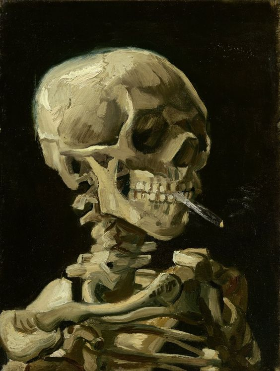
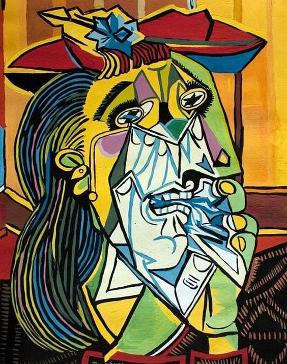
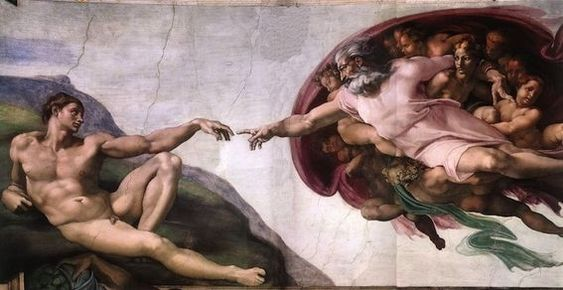
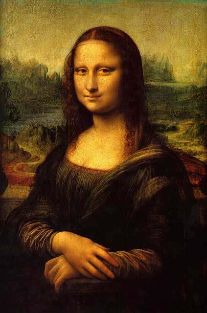
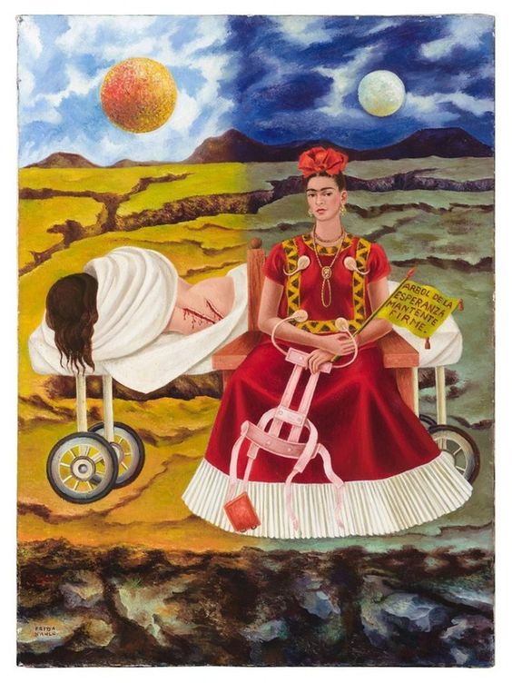
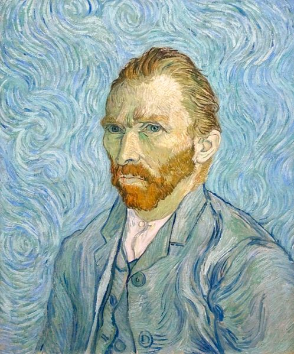

El grito es una obra del pintor noruego Edvard Munch, cuyo título original es Skrik (Scream en inglés). Debido a su fuerza expresiva, esta pintura es considerada un antecedente del movimiento expresionista. El grito es el cuadro más famoso de Munch, quien realizó diferentes versiones del mismo a lo largo de los años.
¿Qué representa la pintura El grito?
Desde el punto de vista iconográfico, El grito presenta a una figura andrógina en primer plano con un gesto de angustia que transmite gran expresividad y fuerza psicológica.
La escena donde se encuentra es un sendero con vallas que se aleja en perspectiva diagonal. En el fondo, se pueden apreciar dos figuras con sombrero que parecen ajenas a lo que ocurre con la figura principal.
En el cuadro El grito de Munch prevalecen los colores cálidos de fondo. En el cielo, fluido y arremolinado, predominan los tonos naranjas. El sendero y el paisaje, por su lado, parecen iluminados por una luz semioscura. Las formas se retuercen y los colores están dispuestos de una manera arbitraria.
Antes que trasponer la realidad, los colores buscan expresar un sentimiento de angustia y desesperación, más vivamente reflejada en la figura de primer plano, en la intensidad de su gesto de tribulación y espanto.
El tema del ritmo y la vibración es muy importante en este lienzo. Algunos sostienen que el mayor logro atribuido de la obra es la manera en que Muncho captó la dimensión del sonido mediante el ritmo visual.
La obra provocó fuertes críticas en su momento. También se especuló sobre la salud mental de Munch.
El artista, según sus diarios, se sintió profundamente herido por la reacción a su obra. Se cree que fue entonces cuando volvió al cuadro y, con un lápiz, dejó el mensaje que ahora le atribuyen.
Tanto el padre como la hermana de Munch sufrían episodios de depresión y el artista fue hospitalizado en 1908 debido a una crisis nerviosa.
Su madre y hermana mayor murieron antes de que Munch cumpliera 14 años. Doce años después, murió su padre y otra hermana fue ingresada con trastorno bipolar en un psiquiátrico

Craneo con cigarro encendido
Museo Van Gogh, Amsterdam
Este esqueleto con un cigarrillo encendido en la boca es una broma juvenil. Van Gogh lo pintó a principios de 1886, mientras estudiaba en la academia de arte de Amberes. La pintura muestra que tenía un buen dominio de la anatomía.
Dibujar esqueletos era un ejercicio estándar en la academia, pero pintarlos no formaba parte del plan de estudios. Debe haber hecho esta pintura en algún otro momento, seguramente después de sus lecciones.
Óleo sobre lienzo
32,0 x 24,5 cm.
Amberes, Invierno, 1885/86
F 212, JH 999
Museo van Gogh, Ámsterdam
¿Qué representa?
Existen varias interpretaciones sobre la intención del autor, bastante dispersas entre sí. Algunos la consideran una obra cómica, como si el esqueleto se burlara de los demás miembros de la Academia y su actitud clasicista.” Esto se puede justificar con el hecho de que es un esqueleto fumando, el cráneo aprieta un cigarrillo encendido entre los dientes, como una burla de los demás esqueletos presentes en las academias de dibujo. Para otros, muestra la importancia que le da Vincent a su desmejorado y demacrado físico, y muchos críticos lo consideran su primer autorretrato; un reflejo, una muestra de hasta qué punto le preocupaba su evolución física y mental.
“Antes de dibujar modelos vivos, los estudiantes de Bellas Artes dibujan hasta la extenuación esqueletos (o eso deberían hacer) para dominar la anatomía humana. En esta época temprana de su carrera, Van Gogh estudiaba en Amberes y no sólo dibujó cráneos, sino que hizo un par de pinturas sobre ellos.”
Se puede considerar una de sus obras más cómicas, quizás el cuadro más cómico de su carrera. Es un chiste, puede ser una crítica humorística sobre las escuelas con prácticas más conservadoras. El pintor declaraba que odiaba esas clases y al final reconoció que eran aburridas y que a su consideración no se aprendía nada de ellas.
El artista prefería experimentar, pues se encontraba claramente influenciado por dos factores con suma relevancia en sus obras: Rubens y las xilografías japonesas. Descubrió nuevos colores al querer reproducir el color de la carne que lograba Rubens. Aunque se aprecie más a simple vista en sus obras la importancia del arte japonés, comienza a imitar colores más claros que incorpora a su paleta, como se puede ver en La mujer de azul (1885). Sin embargo, en esta obra su principal objetivo era prosperar en los retratos, inspirado en las cabezas realizadas por Rubens.

La mujer que llora
Autor Pablo Picasso (1881-1973)
Nombre de la obra La mujer que llora
Fecha 1937
Técnicas y materiales óleo sobre lienzo.
Dimensiones 61cm x 50 cm
Ubicación Tate Modern, Londres, Gran Bretaña.
Período/estilo Pintura moderna
¿Qué representa la pintura El grito?
La mujer que llora es una pintura que el artista español Pablo Picasso realizó en París, donde vivía, a finales de octubre de 1937.
El cuadro forma parte de los postscripts del Guernica, una serie de obras en las que Picasso continuó explorando los temas con los que había trabajado en esa obra. Al mismo tiempo, es un retrato de la fotógrafa surrealista Dora Maar, que era su amante en ese período.
Como parte del proceso de creación del mural que formó parte del Pabellón español en la Exposición internacional de París de 1937, Pablo Picasso desarrolló una intensa investigación sobre temas en los que ya había trabajado en obras previas como el toro, el caballo y las mujeres sufrientes.
Durante los meses previos y posteriores a la producción del Guernica, elaboró decenas de dibujos y pinturas en los que analizaba esos temas con distintos recursos plásticos. La mujer que llora, derivado de la madre que sostiene a su hijo muerto en el Guernica, fue un tema que obsesionó a Picasso durante todo el año 1937. Es el motivo del que realizó más versiones incluso en años posteriores.La mujer que llora es una pintura que el artista español Pablo Picasso realizó en París, donde vivía, a finales de octubre de 1937.
Entre las características de La mujer que llora se pueden mencionar las siguientes:
Es una pintura realizada con óleo sobre tela que representa a Dora Maar en un llanto desconsolado mientras cubre su boca con un pañuelo blanco.
Se han rastreado 36 imágenes realizadas por Picasso sobre este tema, incluyendo dibujos, grabados y pinturas. La versión de la Tate Gallery es la más compleja de toda la serie desde el punto de vista compositivo, constructivo y del color.
La mujer que llora reúne y sintetiza la evolución de los rasgos constructivos del personaje que el artista había trabajado durante todos los meses anteriores.
Además de ser un retrato, la imagen ha sido analizada como un símbolo de la España sufriente del período de la Guerra civil española. Probablemente Picasso se inspiró en las numerosas fotografías del sufrimiento de las mujeres españolas heridas, migrantes con sus hogares destruidos, etcétera, que llegaban a París a través de la prensa.
Algunas interpretaciones asocian la figura de la mujer en llanto con la advocación de la Virgen de los Dolores o Mater Dolorosa, cuya devoción es muy popular en España.

La creacion de Adam
Autor Miguel Ángel Buonarroti (1475-1564)
Nombre de la obra La creación de Adán
Fecha 1508-1512
Técnicas y materiales Fresco
Dimensiones 280 × 570 cm
Ubicación Bóveda de la Capilla Sixtina, Ciudad del Vaticano.
Período/estilo Renacimiento
¿Qué representa?
La escena tiene lugar después de que Dios ha creado la luz, el agua, el fuego, la tierra y los demás seres vivos. Dios se aproxima al hombre con toda su energía creadora, acompañado de una corte celestial.
Por esa energía creadora la escena está cargada de un intenso dinamismo, acentuado por las líneas ondulantes que atraviesan toda la composición y que imprimen un ritmo visual. Asimismo, gana un cierto sentido escultórico gracias al trabajo de volumen.
La creación de Adán es una pintura al fresco ubicada en la bóveda de la Capilla Sixtina, en el Vaticano. Forma parte de un gran ciclo iconográfico dedicado a la historia universal, de acuerdo con la concepción del cristianismo, antes de la ley de Moisés.
Fue realizada por el artista florentino Miguel Ángel Buonarroti a principios del siglo XVI.
La obra ocupa uno de los 9 recuadros centrales que narran distintos episodios de la historia bíblica de la humanidad de acuerdo con el libro del Génesis, desde la creación hasta la historia de Noé y el renacer de la humanidad luego del diluvio universal.
La composición de La creación de Adán es innovadora, se distancia del modo acostumbrado de representar la creación del primer hombre. El artista separó el espacio terrenal, en el que ubicó a Adán, del espacio celestial en el que Dios flota junto con los demás seres espirituales. Para hacerlo, estableció una diagonal imaginaria de espacio vacío entre ambos sectores.
Las manos de Adán y de Dios que no llegan a tocarse, marcan el eje de la composición. Según algunas interpretaciones, este recurso visual haría alusión al momento en que Dios está a punto de insuflar el alma en el hombre recién creado. Sin embargo, según otros estudiosos, el momento representado sería el posterior, es decir, el de separación entre Dios y Adán.
Las figuras tienen volúmenes destacados a través de un fuerte trabajo con claroscuros. Adán está representado a través de un desnudo idealizado con un acentuado desarrollo de la musculatura a la manera de los héroes griegos de la tradición clásica. La figura de Dios también tiene formas concretas y carnales.

La mona lisa
Autor Leonardo da Vinci (1452-1519)
Nombre de la obra Mona Lisa, La Gioconda (Retrato de Lisa Gherardini, esposa de Francesco del Giocondo)
Fecha 1503-1519
Técnicas y materiales Óleo sobre tabla
Dimensiones 77 cm x 53 cm
Ubicación Museo del Louvre, París, Francia
Período/estilo Renacimiento.
¿Qué representa la pintura?
La Mona Lisa o La Gioconda es probablemente, la pintura más famosa del mundo. Su autor fue el artista del Renacimiento Leonardo da Vinci.
Aunque se ha discutido el verdadero tema que se representa, la mayoría de los investigadores coinciden en que es el retrato de una dama florentina llamada Lisa Gherardini y que se realizó a pedido del marido de esta, Francesco del Giocondo. De ahí los nombres con que se conoce a la pintura: monna es la versión abreviada en el italiano de la época, de madonna que significa “señora” y Gioconda, la versión femenina de su nombre de casada.
La enorme fama de la pintura se debe a una combinación de factores. Por un lado, la sutil ambigüedad de la expresión de la retratada sumada a la conocida excentricidad de da Vinci la rodearon de una aureola de misterio. Por otra parte, la maestría pictórica de Leonardo, que empleó en esta obra técnicas novedosas de una manera magistral, tuvo como consecuencia que numerosos pintores hicieran copias, incluso durante la vida del artista y también que fuera mencionada en distintos textos. El primero de ellos fue el de Giorgio Vasari quien, en 1550, escribió que la Gioconda aparecía representada tan milagrosamente viva que la obra parecía hecha de carne, no de pintura.
Durante el siglo XIX, el cuadro fue objeto de descripciones literarias que alimentaron la idea falsa de que ocultaba algún mensaje secreto. Finalmente, en 1911, un antiguo empleado del Museo del Louvre la robó y la conservó hasta 1913, cuando fue descubierta y devuelta al museo. Este episodio tuvo una gran cobertura de los medios de comunicación de todo el mundo. La imagen de la Mona Lisa apareció en periódicos de todos los continentes y la hicieron conocida incluso para quienes no tenían intereses artísticos.

La mona lisa
Año 1946
Autor Frida Kahlo
Técnica óleo sobre masonite
Estilo Autorretrato, Arte naif
Tamaño 54cm × 40cm
Localización Colección Daniel Filipacchi. París, Francia.
¿Qué representa la pintura?
La dolencia del cuerpo fue un factor que influenció la vida y posterior obra de Frida desde muy temprana edad.
A los seis años de edad, en 1913, cuando se se enferma de poliomielitis, lo cual le deja como secuela la pierna derecha más delgada, algo más corta y menos desarrollada, así como el pie derecho ladeado hacia afuera. Su padre la animaba para que se ejercitase con el uso de la bicicleta y la natación.
El 17 de septiembre de 1925, a la edad de 17 años, Frida viaja junto a Alejandro Gómez Arias, amorío de su juventud, en un autobús que es arrollado por un tranvía, destruyéndolo por completo. El pasamanos de metal atraviesa a la joven por la cadera, fracturando el hueso pélvico, y sale por la vagina. A esta se suman además tres fracturas en la columna vertebral, una en la clavícula, en dos costillas, y la descoyuntura el hombro derecho. Su pierna derecha, ya afectada por la poliomielitis, sufre once fracturas, más la dislocación del pie.
Este accidente fue el inicio de una tortuosa existencia desde el punto de vista físico, psicológico y emocional. Los frecuentes padecimientos, los crecientes dolores, los prolongados periodos de reposo en el lecho y la constante fragilidad, fueron consumiéndola lentamente.
Frida fue operada en múltiples ocasiones, algunas de ellas desastrosas, con largas convalecencias y secuelas graves, y utilizó alrededor de 25 diferentes corsés como correctores de su postura. Tuvo tres embarazos, en 1930, 1932 y 1934, los cuales resultaron en abortos espontáneos. Además, durante la última etapa de de su vida le fue amputada una parte de la pierna derecha, debajo de la rodilla, amenazada por la gangrena.
Paulatinamente, y desde el accidente con el tranvía, Frida encontrará en la pintura una vía de sobrevivencia y expresión de estos dolorosos episodios biográficos, en los que entrelaza la crudeza con la expiación y donde convergen los afluentes de lo onírico y lo simbólico, más notas irónicas y cruentas, y referentes a la cultura popular de México.

Autorretrato
Autor Vincent van Gogh
Creación septiembre de 1889
Ubicación Museo de Orsay (Francia)
Material Óleo y Lienzo
Dimensiones 65.0 centímetros x 54.2 centímetros
¿Qué representa la pintura?
Van Gogh acudió en sus últimos años de forma repetitiva al género del autorretrato, realizando más de 30.
Con sus características líneas ondulantes cargadas de color, en 1889 se pintó una vez más a si mismo. Esto se debe en parte a que había muy poca gente que estuviera dispuesta a posar para sus cuadros.
En esta pintura vemos a Vincent situado en el centro de la composición. Su actitud es calmada, aunque sus ojos claros se clavan en el espectador y nos miran con intensidad junto a sus cejas que nos indican cierta turbación, probablemente a causa de la enfermedad que lo acosaba.
El pintor se encuentra inmovil, pero da la sensación de que su barba, su pelo y el fondo se mueven, debido a las líneas curvas y diagonales que transmiten un movimiento constante en la obra.
Los colores fríos de tonos celestes, turquesas y verdes presiden la mayor parte del espacio y están presentes tanto en el fondo como en el traje que lleva puesto. Son los tonos cálidos, como los naranjas de su barba y su pelo los que resaltan y hacen que centremos nuestra atención en el rostro del pintor.
También cabe destacar que, a diferencia de otros autorretratos en los que aparece con un aspecto más descuidado, en este cuadro Van Gogh se muestra elegantemente vestido. Si nos centramos en su traje, podemos observar el dinamismo en su ropa, que crea con cada pincelada pequeñas olas en la tela.
Van Gogh envió el cuadro a su hermano Theo, adjuntando una carta que decía lo siguiente:«Necesitarás estudiar el cuadro por un tiempo. Espero que notes que mis expresiones faciales se han vuelto mucho más tranquilas, aunque mis ojos tienen la misma mirada insegura que antes, o eso me parece a mí.»